<p class="nav-bar">
  <mat-toolbar color="primary">
    <button
      mat-icon-button
      class="example-icon"
      aria-label="Example icon-button with menu icon"
    ></button>
    <span routerLink="/"
      >
      <strong>GoCredit</strong></span
    >
    <span class="example-spacer"></span>
    <button mat-button [routerLink]="['/admin/users']">Admin</button>
    <button mat-button routerLink="/about-us">About Us</button>
    <button mat-button routerLink="/contact-us">Contact Us</button>
    <button mat-button routerLink="/login">Login</button>
    <button mat-button routerLink="/sign-up">Sign Up</button>

    <!-- <button
      mat-icon-button
      class="example-icon favorite-icon"
      aria-label="Example icon-button with heart icon"
    >
      <mat-icon>favorite</mat-icon>
    </button>
    <button
      mat-icon-button
      class="example-icon"
      aria-label="Example icon-button with share icon"
    >
      <mat-icon>share</mat-icon>
    </button> -->
  </mat-toolbar>
</p>
